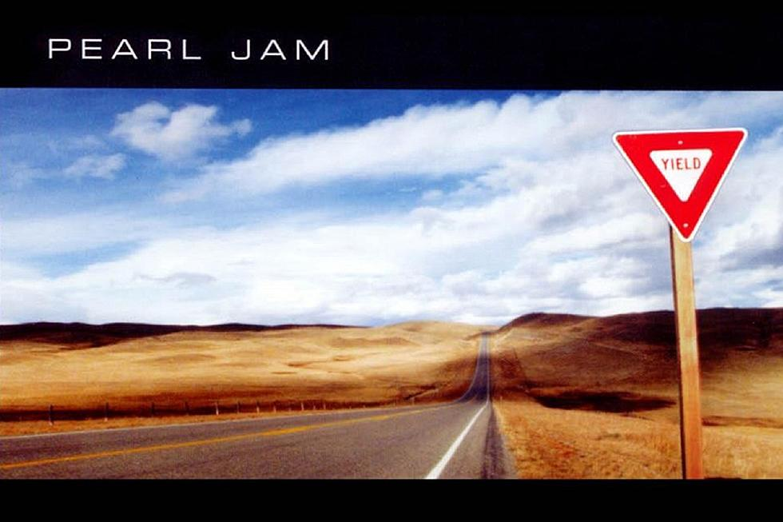

PEARL JAM

Yield is the fifth studio album by American alternative rock band Pearl Jam, released on February 3, 1998.
Following a short promotional tour for its previous album, No Code (1996), Pearl Jam recorded Yield throughout 1997 at Studio Litho and Studio X in Seattle, Washington.
The album was hailed as a return to the band's early, straightforward rock sound, and marked a more collaborative effort from the band as opposed to relying heavily on frontman Eddie Vedder to compose the song lyrics.
The lyrics deal with contemplative themes, albeit seen in a more positive manner compared to the band's earlier work.
Yield received positive reviews and debuted at number two on the Billboard 200. While like No Code, the album soon began dropping down the charts, Yield eventually outsold its predecessor. The band did more promotion for the album compared to No Code, including a return to full-scale touring and the release of a music video for the song "Do the Evolution." The record has been certified platinum by the RIAA in the United States. The album is Pearl Jam's last release with drummer Jack Irons, who left the band during the album's promotional tour. He was replaced with Soundgarden drummer Matt Cameron.
TRACK LIST
1997